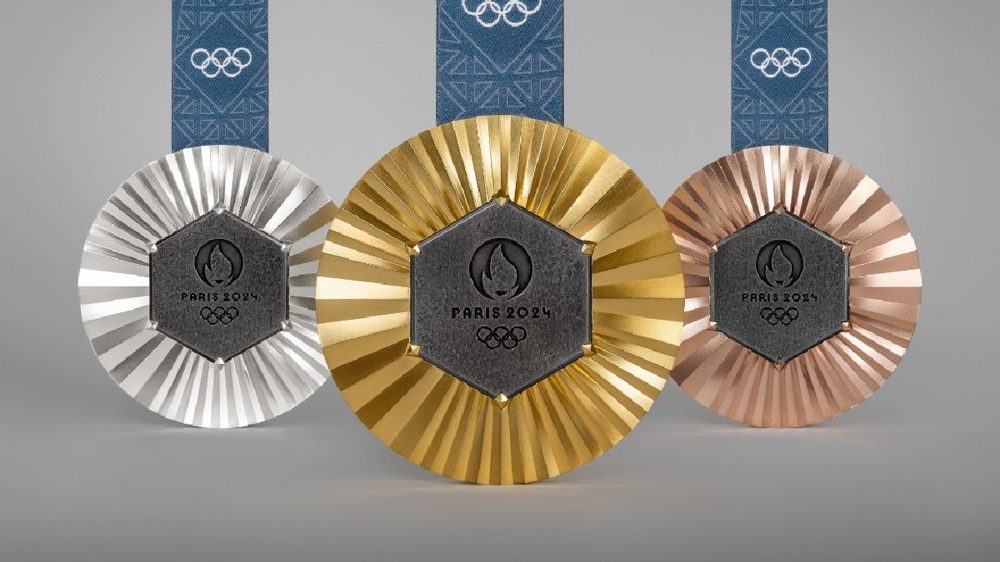

Medalhas
Argentina (duas medalhas de ouro) A Argentina também é bicampeã Olímpica na modalidade, levando a medalha de ouro nas edições de 2004 e 2008, sendo a última uma das primeiras glórias do então jovem Lionel Messi com a Albiceleste. Além disso, os Hermanos têm mais duas medalhas no futebol masculino.
Além dessas conquistas, a Argentina também ganhou a medalha de prata em 1928, quando foi derrotada pela Uruguai na final. A seleção tem sido historicamente uma força importante no futebol olímpico, refletindo a tradição e o talento do país nesse esporte.
